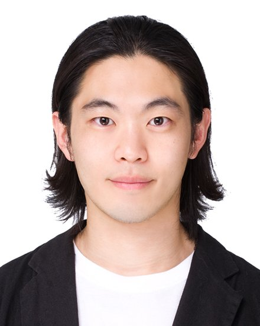

DAI LAB / TEAM
People
We are a group of dreamers, builders and experimentalists, from backgrounds across physics, chemistry, biology, engineering, and computer sciences. Together, we find new ways to measure biology.
Assistant Professor of Bioengineering, CPRIT Scholar in Cancer Research
Mingjie Dai
Mingjie is a technology developer in DNA bioengineering, super-resolution microscopy, and high-throughput sequencing. Prior to joining Rice, he was a Systems Biology Department Fellow at Harvard Medical School and a Technology Development Fellow at the Wyss Institute for Biologically Inspired Engineering at Harvard. He earned his B.A. and M.Sci. in Physics from the University of Cambridge, U.K. in 2010, and his Ph.D. in Biophysics from Harvard University in 2016.
EmailWebsite ↗
Postdoctoral Fellow
Yan Yan
Yan is a postdoctoral associate in the lab. Her research interests include developing methods for single cell sequencing, single molecule protein identification and single molecule super-resolution imaging. Before joining the Dai lab, Yan was a postdoctoral fellow at the Wyss Institute for Biologically Inspired Engineering at Harvard University. She obtained a Ph.D degree in physics from Emory University, and studied transcriptional regulation using single molecule manipulation methods.
Email
Bioengineering PhD Student
Rongshu Jin
Rongshu is a PhD student in Bioengineering. He works on developing methods for ultra-sensitive and scalable single cell sequencing. Before joining the lab, Rongshu was a Bioengineering Masters student at Rice University.
Email
Computational Research Specialist
Rishabh Goel
Rishabh Goel is currently furthering computational research in the Dai Laboratory at Rice University. He is interested in leveraging multi-omics data analysis, machine learning techniques, and state-of-the-art bioinformatics tools to drive innovative drug discovery and target identification. He earned his B.A. in Molecular and Cell Biology and B.S. in Business Administration from the University of California, Berkeley. He also completed a minor in Data Science. He has proven industry experience of 3+ years.
Email
Lili Du
Postdoctoral Fellow
Jacqueline Haugen
Research Specialist

Sangrok (Rocky) Han
Bioengineering PhD Student

Runming Yang
Undergraduate Researcher (BioSciences)

Thomas Liu
Undergraduate Researcher (BIOE)
Aurian Naderi
Rotation Student (BIOE)
Maryam Amiri
Rotation Student (Chemistry)
Michael (Chi) Zhang
Rotation Student (SSPB)
Mohamed Soui
Rotation Student (BIOE)
Passa Pungchai
Rotation Student (BIOE)
Sangmin Jeon
Rotation Student (Chemistry)
Yajie Liu
Rotation Student (BIOE)
Yiduo Wang
Rotation Student (BIOE)